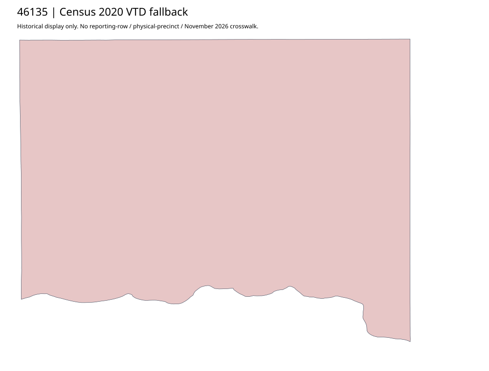

304 ordered indexYankton | 46135
Official auditor links complete city and county scanned precinct maps plus separate vote-center roster. County scan uses a highway-map base marked revised1980 with an undated highlighted precinct overlay; that is not a 1980 effective precinct certificate. No scanned-map leaf crosswalk or current boundary approval. Census2020 independently contains one countywide VTD here, not detailed precinct polygons.
4 priority / 7 full historical observations. Parent is a summary ancestor, not additive to leaves. No physical feature matches or current reporting crosswalk approved.
Acquired shared-parent assets
map-46135-022-network | complete1-page PDF; all-page contact sheet; complete page1; complete original gzip. Exact reconstruction: python -B scripts/reconstruct.py --id map-46135-022-network /private/tmp/map.pdf
map-46135-023-network | complete1-page PDF; all-page contact sheet; complete page1; complete original gzip. Exact reconstruction: python -B scripts/reconstruct.py --id map-46135-023-network /private/tmp/map.pdf
Administrative/district supplement (not a precinct polygon match): map-46135-021-network
Census2020 fallback
1 native historical VTD features. Entire785-feature ZIP original retained once, all66 counties. Yankton has one countywide VTD. No current/reporting allocation. complete original gzip

Full binary/attribute/geometry QA
Observed authority/acquisition routes
Complete SOS authority fields including original blank/masked values: parent inventory. No contacts were sent.
Ordered full children
- Absentee Precinct | 6077 source votes | priority
- Yankton Fire Station #2 | 1878 source votes | priority
- Yankton City Hall | 1447 source votes | priority
- Lewis and Clark Recreation Area | 456 source votes | priority
- Gayville Community Center | 381 source votes | remainder
- Mayfield Store | 304 source votes | remainder
- Lesterville Fire Hall | 288 source votes | remainder